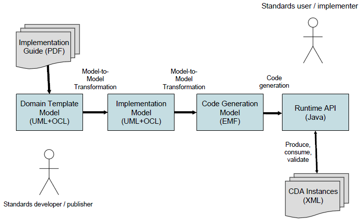

A model-driven development process is used to produce source code from UML models.

The standards developer is responsible for creating the domain template model. This model is input to the model-to-model transformation process. The template model is ultimately converted into an implementation model. The implementation model has been restructured and prepared for code generation. We use the Eclipse Modeling Framework (EMF) to generate Java source code. Once the implementation model has been created, it is imported into EMF. The final step of the process is to produce source code from the EMF model.